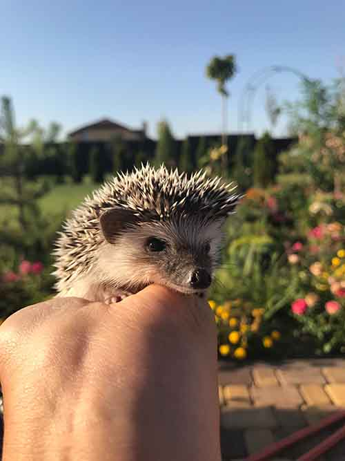

Wild hedgehogs are native to Asia, Europe and New Zealand. They are not native to the U.S. but they are very popular pet in here. Hedhehogs are generally called African hedgehogs. Given the right cage set-up and evironment, these animals can thrive and be fun, social pets.
Hedgehog needs a big cage. the cage should be a wire enclosure meant for guinea pigs, but the cage floor should be solid, rather than wire, so the hedgehog doesn't not get caught. Lined the cage with newspaper or different bedding(wood shavings). Don't used cat litter or cat litter products the reason are because of the dust and are indigestible if eaten, leading to potential gastrointestinal obstruction.
Hedgehogs need a heavy bowl, so they can't not untip the bowl and for pelleted and a smaller bowl for insects. some hedgehog drink from a bottle wate that is affixed to the cage or drink from a bowl. All hedgehog should be proided with a smooth-sided wheel to run in. as well as a place to hide, for example upside-down wooden box with a cut out door or a plastic igloo. Hedgehod cages should be spot-cleaned daily to keep them free of fecal contamination and leftover food debris, and thoroughly cleaned at least once a week by removing bedding and replacing it withnew bedding, a long fresh food and water.
TProblems With Pet HedgehogsNocurnal Hedgehogs are nocturnal and are most active at night. when trying to bond with them can take a while due to thier solitary nature. Playing withthem and letting them roam around before bedtime will help them get used to your touch and care. There are active Hedgehogs are very active. Hedgehogs can run for miles! They enjoy digging, climbing and swimming. They are noctural, so theyll be doing most of thier digging and running around while you're trying to sleep, so away from your bedroom will help them blow off steam and you to get some rest.